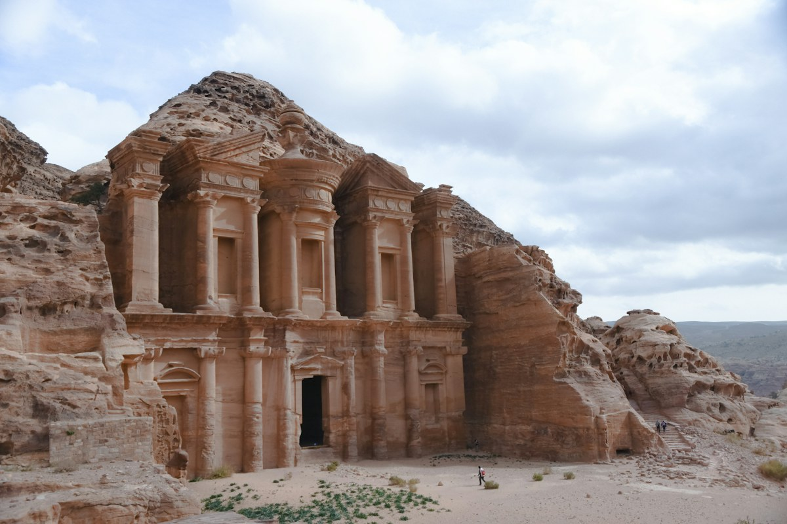
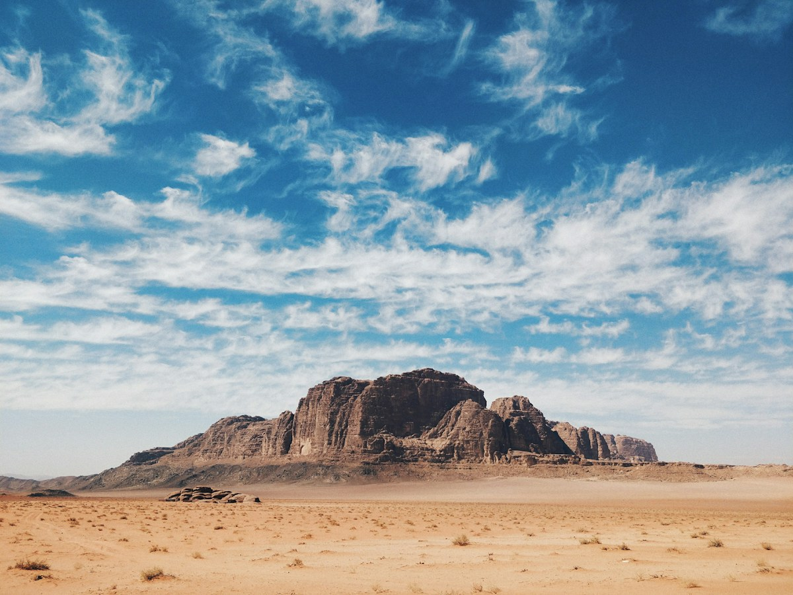
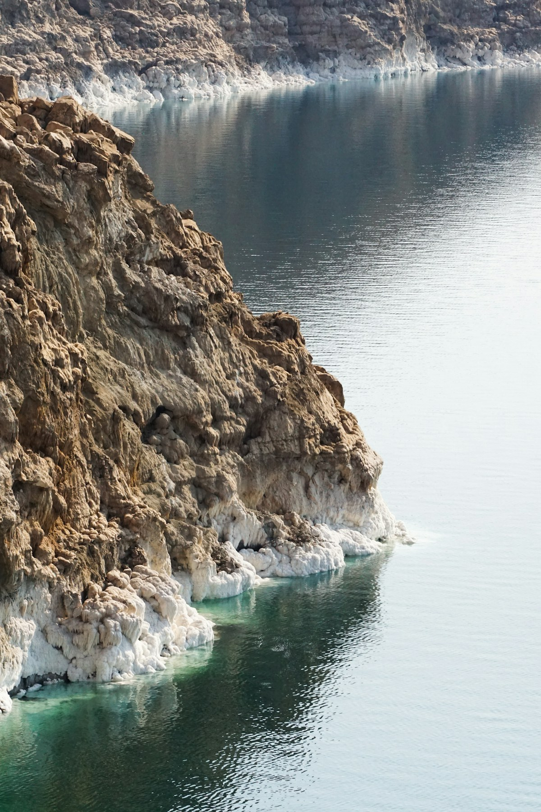
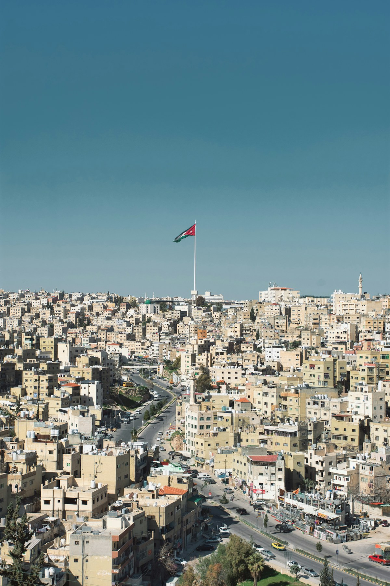
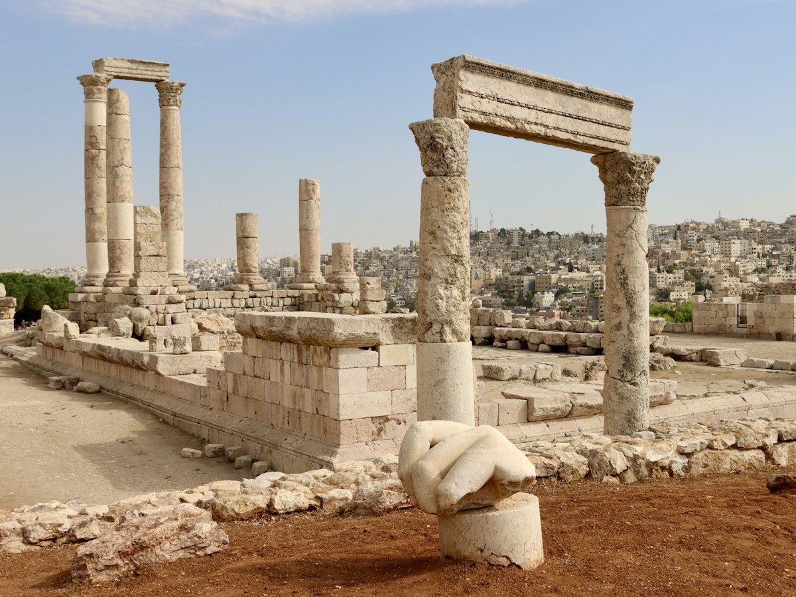
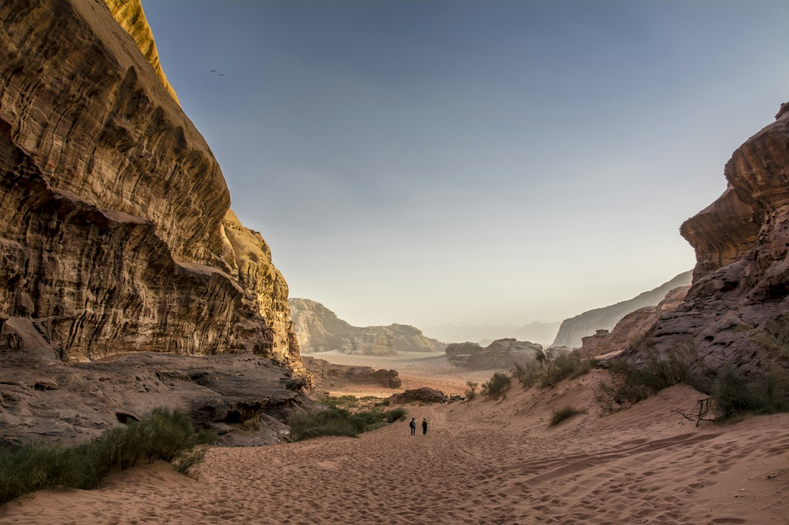
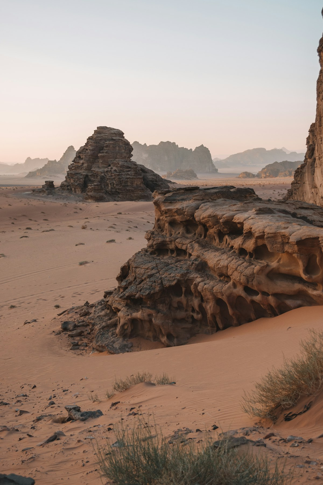
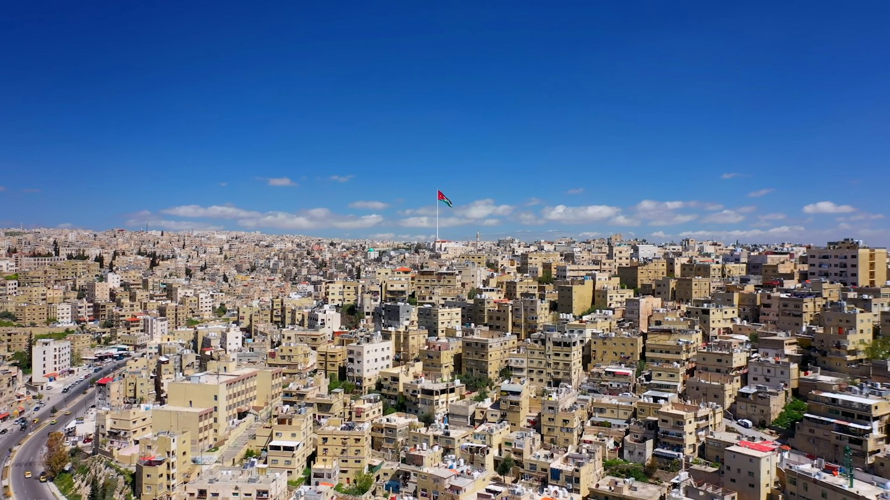

Out & About
Find hikes, camps, cultural encounters, family fun and local food experiences.
8 Jordan experiences found







Find hikes, camps, cultural encounters, family fun and local food experiences.
8 Jordan experiences found







